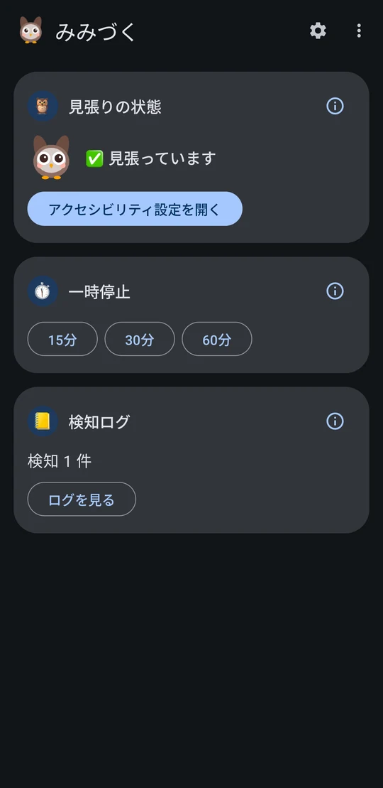
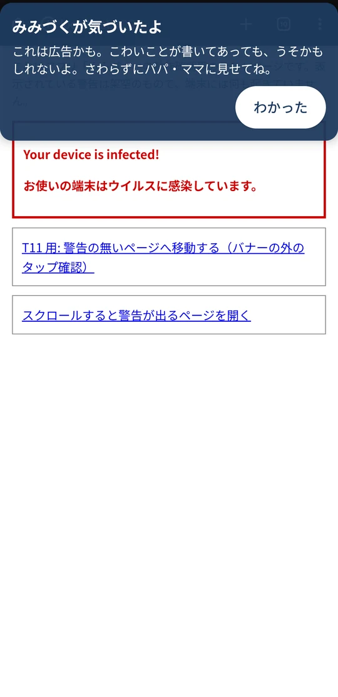
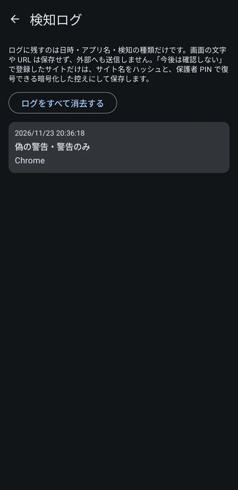
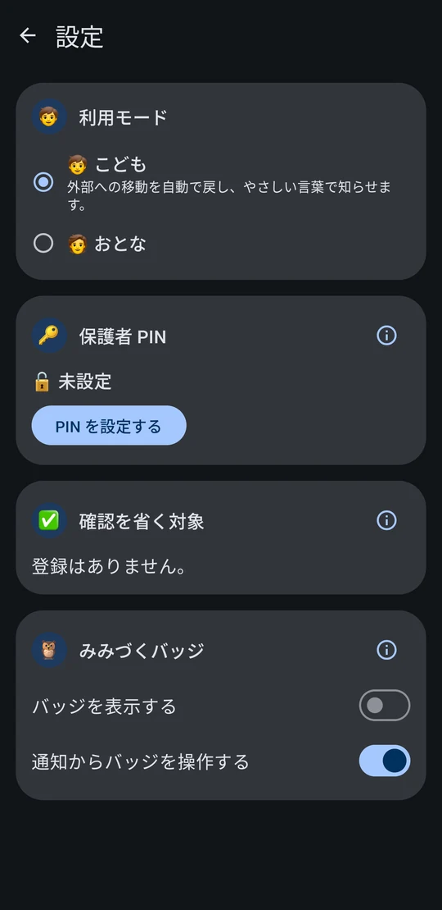
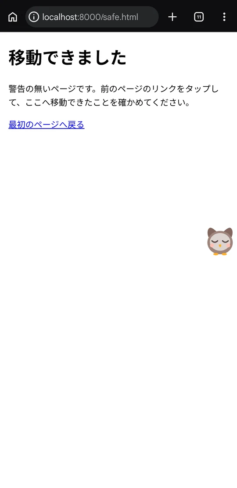
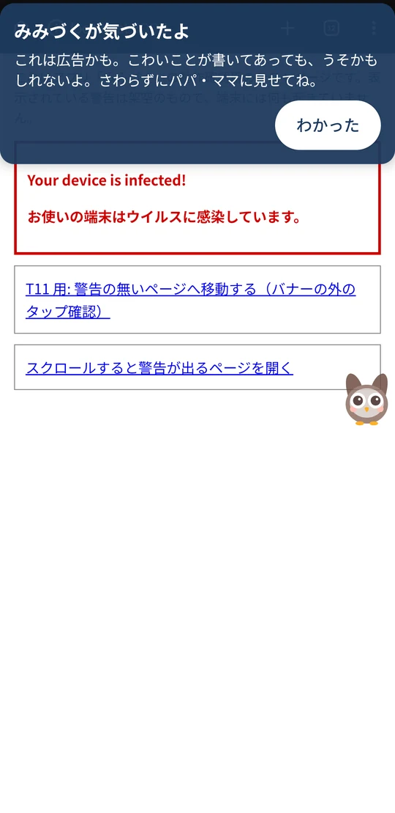
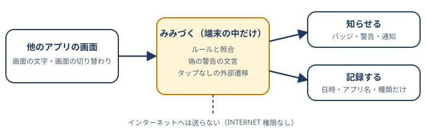

こんなとき、ありませんか？
子供がゲームや動画アプリを使っている最中の「いつの間にか」を、見張ります。
-
急に「ウイルスに感染」と出た
広告によくある偽の警告を文言で見つけ、「偽の警告の可能性があります」と知らせます。
-
気づいたらストアが開いていた
タップしていないのに外部アプリへ飛んだことに気づき、戻るか、そのまま進むかを選べます。
-
何が起きていたか分からない
いつ・どのアプリで・何に気づいたかを端末の中に記録し、あとから一覧で見られます。
できること
悪質さのサインに気づく、小さな見張り番です。
-
偽の警告
スケアウェア文言の検知
「ウイルスに感染」「your device is infected」など、不安をあおる文言を見つけて警告します。
-
勝手な移動
外部遷移の検知
アプリからブラウザ・Play ストア・インストーラーが勝手に開かれたことに気づいて知らせます。
-
バッジ
画面の端のみみづく
平常はうとうと、危ない動きを止めると目が大きくなります。指で動かせ、画面の端に最小化もできます。
-
保護者
保護者 PIN と一時停止
PIN（4〜8桁）で、おとなモードへの切替・ログの消去などを守れます。一緒に使うときは 15・30・60 分だけ止められます。
-
ログ
検知の記録
日時・アプリ名・検知の種類だけを端末の中に保存し、新しい順に一覧できます。
-
やさしい
こどもに伝わる言葉
こどもモードでは、やさしい言葉で知らせます。
画面
実際の画面です。見張りの状態から、設定まで、ひと目で分かるようにしています。
-

見張りの状態 -

偽の警告に気づく -

検知の記録 -

モードと保護者 PIN -

バッジ：見張り中は眠っています -

バッジ：気づくと目が開きます
仕組み
Android のユーザー補助機能で画面を見て、端末の中だけで照合します。

オンにする
最初に画面の読み取りについての説明を読んで同意し、アクセシビリティ設定で「みみづく」をオンにします。
見張る
前面のアプリの名前と画面の文字を、その場で照合します。同意するまでは何も読み取りません。
気づいて知らせる
偽の警告や勝手な移動に気づいたら、バッジや警告で知らせ、記録を残します。
こどもモードとおとなモード
使う人に合わせて、知らせ方を切り替えられます。
| 場面 | こどもモード（既定） | おとなモード |
|---|---|---|
| 外部への勝手な移動 | 自動で戻り、やさしい言葉で知らせる | 自動では戻さず、「戻る」「このまま進む」を選べる |
| 偽の警告の文言 | 警告を出す | 警告を出す |
| バッジ | 初期位置は画面の右端。指で動かせる | 設定や通知のボタンで非表示にできる |
- GitHub 版と Google Play 版は同じソースから作り、機能の違いは版ごとの設定だけで切り替えます。Play 版は Google Play のポリシーに合わせ、悪質さのサインへの対応だけを残します。
- 広告そのものの除去や、広告のクリック・完了の偽装は行いません。
- 子供がアクセシビリティ設定から本アプリをオフにすることは、アプリでは防げません。Family Link などで設定画面の操作を制限してください。
安心して使えます
画面を読み取るアプリだからこそ、外へ出さない作りにしています。
- 画面の文字は照合にだけ使い、保存も送信もしません
- インターネット権限を持ちません外部へデータを送れない構成です。
- 検知の記録は端末の中だけに保存しますバックアップ・機種変更時の転送の対象外です。
- 同意するまで、何も読み取りません
詳しくはプライバシーポリシーを参照してください。
入手のしかた
いまは GitHub からの配布です。自分でビルドして端末へ入れる手順を、リポジトリの README にまとめています。 Google Play 版は申請を予定していますが、公開はまだです。